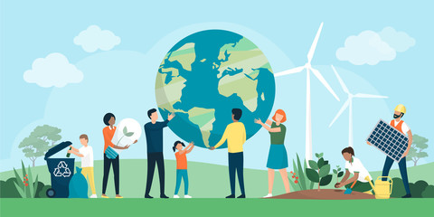
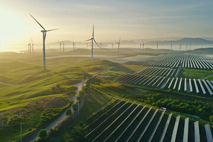
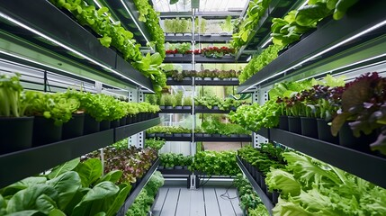
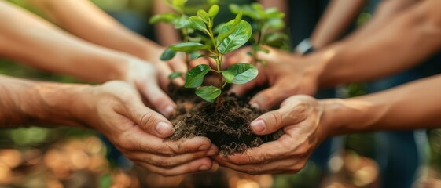

Introdução à Sustentabilidade no Agronegócio
O agronegócio brasileiro é um dos principais setores econômicos do país, e sua sustentabilidade é fundamental para o futuro do planeta.
Biodiversidade e Preservação
O setor agrícola brasileiro é responsável por proteger áreas com vegetação nativa, preservando a biodiversidade e mantendo os ecossistemas naturais.

Energia Renovável no Agronegócio
O agronegócio brasileiro é um dos principais produtores de energia renovável do mundo, com a produção de biocombustíveis e eletricidade a partir de fontes renováveis.
Produção Sustentável de Alimentos
A produção sustentável de alimentos é fundamental para garantir a segurança alimentar e reduzir o impacto ambiental do agronegócio.
Impacto Social do Agronegócio
O agronegócio brasileiro tem um impacto significativo na sociedade, gerando empregos e renda para milhões de pessoas.
